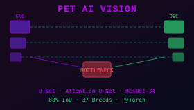
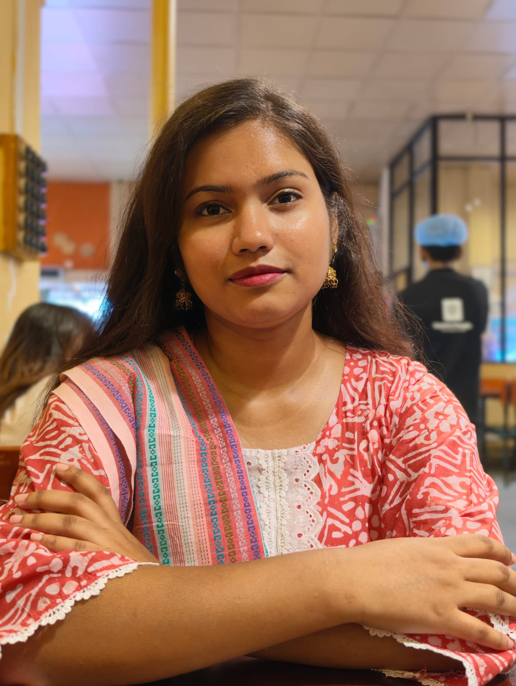

BRAC University · CSE · 2022–Present
Aditi Roy Adri
Undergrad Computer Science Student at BRAC University
I build things that think, render, and connect.

About
Hey, I'm Adri — a Computer Science undergrad at BRAC University, Dhaka.
I love building things from scratch. I've always been someone who jumps between different areas — systems programming, game development, web apps, deep learning — not because I can't focus, but because I genuinely enjoy understanding how things work at every level. The frustrating parts of building something are usually the most interesting parts to me.
These days I'm fully focused on computer vision and image processing. I'm currently researching underwater image segmentation, training and comparing models like YOLO, Mask R-CNN, and U-Net on real underwater datasets, and working toward publishing my first journal paper. It's the area I want to grow in, and eventually build a research career around.
When I'm not doing research or writing code, I'm probably solving problems on Codeforces, figuring out why my OpenGL transforms broke again, singing to myself, or making another cup of coffee that I definitely didn't need.
I care about finishing what I start and making things that actually work. That's what drives most of what I do.
20+Projects Built
50+CF Solutions
3OpenGL Games
Education
2022 — Present
B.Sc. in Computer Science & Engineering
BRAC University · Dhaka, Bangladesh
Coursework spans algorithms, operating systems, computer graphics (OpenGL), machine learning, computer networks, digital logic design, and microprocessor systems.
AlgorithmsMachine Learning
Computer GraphicsOperating Systems
Computer NetworksMicroprocessors
Digital Logic
2026 — Ongoing
Research — Underwater Image Segmentation
Independent · Working toward first journal publication
Training and benchmarking YOLO, Mask R-CNN, and U-Net on real underwater datasets. Focus on segmentation quality under low visibility, color distortion, and turbidity conditions.
Computer VisionPyTorch
YOLOMask R-CNNU-Net
Skills
Languages
PythonC++C
JavaJavaScriptPHP
Assembly (EMU8086)
Web & Frameworks
ReactNode.jsExpress
HTML/CSSMySQLMongoDB
ML & Computer Vision
PyTorchYOLOMask R-CNN
U-NetNumPyPandas
MatplotlibSciPy
Graphics & Tools
OpenGLGitGitHub
LaTeXCisco Packet Tracer
Projects
Other Noteworthy Projects
EcoGrow Nursery System
End-to-end web system: admin dashboard, order processing, event management, customer storefront.
PHPMySQLHTML/CSS
RISC-V ISA Converter
Translates RISC-V 32-bit assembly to binary/hex machine code across all instruction formats.
PythonRISC-VSystems
Heart Disease Prediction ML
Comparative study of 5 ML models on the Cleveland dataset — identifying the optimal classifier.
PythonScikit-learnPandas
GapTime — Schedule Sync
React app that finds free-time gaps across multiple schedules — instant group meeting planning. Live on GitHub Pages.
ReactJavaScriptLive
Metadata Journal System
OS-level C implementation for file metadata consistency and journaling — crash-recovery at the kernel interface.
COSFile Systems
Enterprise Network Simulation
Full enterprise network in Cisco Packet Tracer — VLSM, RIPv2, failover, DHCP, DNS, and mail services.
Cisco Packet TracerNetworking
Minibank Assembly Simulator
Full banking sim — deposit, withdrawal, balance, PIN auth — entirely in x86 assembly at the register level.
AssemblyEMU8086x86
QR Code Generator
Instant QR generator — vanilla JS, zero dependencies, live on GitHub Pages.
JavaScriptHTML/CSSLive
Codeforces Solutions (50+)
Growing archive of 50+ competitive programming solutions in Python — 76 commits, beginner to intermediate.
PythonAlgorithmsOngoing
Contact
Open to opportunities, collaborations, and interesting conversations. Drop me a line anytime.
aditi.roy.adri@g.bracu.ac.bdor find me on